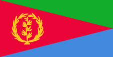

FAITES VOTRE TRADUCTION
CHEZ TREAL !
QUI SOMMES-NOUS ?

TREAL
Une agence qui vous traduit vos documents
rendez-vous... et tout autre besoin, dans les
langues suivantes Amharique, Hadiya,
Tigre, Oromo, Tigrigna et
Arabique.
LANGUES ORIGINAIRES D'ÉTHIOPIE


Amhara
አማርኛ
Langue originaire de la région Amhara.

Hadiya
Langue originaire de la région Awasa.
Tigre
ትግርኛ
Langue originaire de la région Tigray.

Oromo
Afaan Oromoo
Langue originaire de la région Oromia.
LANGUE ORIGINAIRE D'ÉRYTHRÉE
Tigrigna ትግርኛ
Le Tigrigna est une langue chamito-sémitique appartenant
à la famille des langues sémitiques et parlée essentiellement
au
nord-est de la Corne de l'Afrique. C'est la langue officielle
de
l'Érythrée et, en Éthiopie, de l'État régional du Tigré.
Le
tigrigna avait 4 320 000 locuteurs en Éthiopie en 2007, 2 540 000 en
Érythrée en 2006, et quelque 6 915 000 tous pays confondus1.
Il est aussi beaucoup parlé en seconde langue, tant en Érythrée
et en Éthiopie, qu'au sud-est du Nord Soudan et à Djibouti,
ce
qui rend difficiles les estimations des locuteurs de cette langue.
LANGUE ORIGINAIRE D'ARABE
Arabique اَلْعَرَبِيَّةُ

L’arabe est une langue afro-asiatique de la famille des langues
sémitiques.
Avec un nombre de locuteurs estimé entre 315 421
3001 et 375 millions de personnes au sein du monde arabe et de la
diaspora arabe, l'arabe est de loin la langue sémitique la plus
parlée, bien avant l'amharique (seconde langue sémitique la plus
parlée).
C'est la langue officielle de plus de vingt pays et de plusieurs
organismes internationaux,
dont l'une des six langues
officielles de l’Organisation des Nations unies.
La prononciation de l'arabe comporte un nombre assez élevé de
consonnes (28 en arabe littéral) et peu de voyelles (trois timbres et
deux longueurs en littéral, souvent un peu plus en dialectal).
L'arabe s'écrit au moyen de l'alphabet arabe. Par sa grammaire,
l'arabe est une langue accusative et flexionnelle qui fait un usage
important de la flexion interne.
La syntaxe suit dans la
proposition l'ordre fondamental verbe-sujet-objet, et le déterminant
suit le déterminé dans le groupe nominal.
Contactez nous